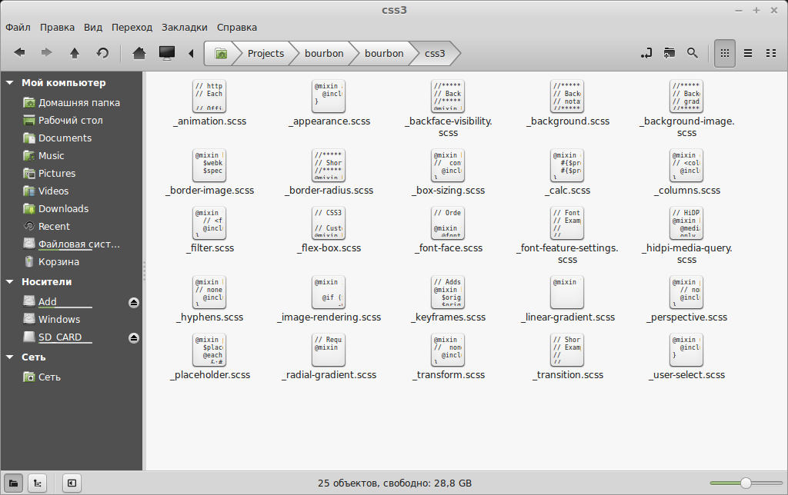

Bourbon + Sass - краткое знакомство
July 11, 2014
Reading time ~6 minutes
Библиотека миксинов (mixin) под препроцессор Sass под названием Bourbon - вот о чем будет сегодняшний краткий обзор.
Данная статья не могла не появиться по нескольким причинам. Первая - я являюсь большим поклонником препроцессора Sass и библиотеки миксинов Compass под него. Библиотека Bourbon является аналогом Compass, просто она меньше по размеру и возможностям. Но это не значит, что она хуже - она обладает некоторыми возможностями, которых нет в Compass.
Помимо этого, существует прекрасная сравнительная статья Sass-гуру Hugo Giraudel, посвященная этим двум библиотекам под один препроцессор. Оригинал статьи находиться здесь - Sass Frameworks: Compass or Bourbon?, а посильный перевод этой статьи размещен здесь - Что выбрать - Compass или Bourbon?. В этой статье Юг Жиродель (Hugo Giraudel) приводит преимущества использования библиотеки Bourbon и сопутствующих ему пакетов, таких как Neat для создания адаптивной CSS-сетки (grid).
Однако, после прочтения вышеназванной статьи один вопрос остается открытым - а как установить библиотеку Bourbon? Что можно в ней делать и как это делать? На эти вопросы я постараюсь ответить самому себе (и возможно - вам, уважаемый читатель).
Инсталляцию библиотеки миксинов Bourbon я буду производить под операционной системой Linux Mint 17 Cinnamon, просто потому что мне так интереснее. Под OS Windows процесс ничем не отличается от того, который будет описан здесь. Единственное условие - на момент установки Bourbon в системе уже должны стоять и нормально работать Ruby + Sass.
Установка библиотеки сводиться к одной вещи - установке пакета
|
1 |
bourbon |
под Ruby. Выполняется это одной командой:
$ sudo gem install bourbon
Проверяю, какая версия этой библиотеки “попала” ко мне:
$ bourbon -v
Bourbon 4.0.2
Отлично! Теперь можно приступать к разворачиванию проекта с поддержкой Bourbon.
Перехожу в директорию с опытными (подопытными?) образцами всего разного и создаю там папку с именем
|
1 |
bourbon |
:
$ cd ~/Projects/
$ mkdir bourbon
$ cd bourbon/
… и запускаю там команду:
$ bourbon install
Bourbon files installed to bourbon/
Не знаю, как вы, а я сразу после этого задал себе вопрос - “А что это было?” Что это за команда и зачем она нужна? Все оказалось просто.
В библиотеке Compass в таблице стилей конкретно указывается, какой модуль необходимо подключить к проекту. К примеру, таким образом:
@import "compass/reset";
@import "compass/utilities/general/clearfix";
@import "compass/css3/transition";
@import "compass/css3/border-radius";
В результате Compass выборочно подгружает по сети только указанные модули. И ничего больше.
Библиотека Bourbon поступает прямо противоположно - она устанавливает локально, в отдельную папку проекта (имя этой папки всегда -
|
1 |
bourbon |
) все миксины сразу, на все случаи жизни. Если посмотреть на содержимое папки
|
1 |
bourbon |
, то увидим такую картину:
$ ls -l bourbon/
drwxr-xr-x 2 addons
-rw-r--r-- 1 _bourbon-deprecated-upcoming.scss
-rw-r--r-- 1 _bourbon.scss
drwxr-xr-x 2 css3
drwxr-xr-x 2 functions
drwxr-xr-x 2 helpers
drwxr-xr-x 2 settings
Видим, что все миксины “расфасованы” по папкам в зависимости от их назначения. Давайте “заглянем” в одну из этих подпапок - пусть это будет
|
1 |
css3 |
:

Видим здесь готовые миксины для создания самых различных CSS3-эффектов -
|
1 |
border-radius |
,
|
1 |
gradient |
,
|
1 |
transform |
,
|
1 |
transition |
и так далее. Ну, теперь все понятно, не правда ли?
Включение библиотеки Bourbon в проект
Дело осталось за малым - включить поддержку миксинов библиотеки в таблицу стилей. Выполняется это обычно, директивой
|
1 |
@import |
. Для этого создаю структуру папок и файлов будущего проекта (однако, Compass это может делать одной командой!):
$ mkdir sass
$ mkdir css
$ touch sass/style.scss
$ touch css/style.css
$ touch index.html
… и помещаю одну строку в таблице стилей
|
1 |
style.scss |
:
@import "bourbon/bourbon";
Мониторинг изменений в проекте Bourbon
Чтобы автоматически отслеживать изменения в файле таблиц стилей
|
1 |
style.scss |
и выполнять компиляцию в CSS-стили, запускаю команду мониторинга:
$ sass --watch sass/style.scss:css/style.css
Использование библиотеки Bourbon
Ну и что, скажете вы? Что дальше? А ничего - дальше только пользоваться библиотекой Bourbon. Для этого с главной страницы проекта Bourbon переходим на страницу документации, нажав кнопочку Bourbon Documentation. В правом верхнем углу есть две ссылки, одна из которых “View Spec” - ведет на страницу CSS-документации MDN, а вторая “View Source” - на страницу GitHub c рабочими примерами миксинов.
Также видим, что миксинов здесь даже на беглый взгляд значительно меньше, чем в библиотеке Compass. Ну это ничего.
Давайте для начала создадим на Bourbon что-нибудь простенькое. Пусть это будут кнопки. Для этого перейдем на страницу документации по созданию кнопок - Button.
Видим, что в библиотеке Bourbon есть три готовых миксина для создания кнопок:
|
1 |
simple |
|
1 |
pill |
|
1 |
shiny |
Поэтому в HTML-коде создаю кнопку:
<button class="simple" type="button"></button>
… и прописываю для нее миксин в таблице стилей
|
1 |
style.scss |
:
.simple{
@include button;
}
Смотрим результат в браузере - готовая красивая синенькая кнопочка! Точно также можно создать еще две другие кнопки, с помощью миксинов
|
1 |
pill |
и
|
1 |
shiny |
. При этом можно передать в качестве аргумента фоновый цвет создаваемой кнопки:
.pill{
@include button(pill);
}
.shiny{
@include button(shiny, #ff9900);
}
Ради любопытства посмотрите на скомпилированный CSS-код этих кнопок в файле
|
1 |
style.css |
- вы будете поражены однозначно!
Bourbon - создаем треугольники
Кто из внимательных читателей может на память создать треугольник на чистом CSS? Конечно, там нет ничего сложного, но уверен - время у вас все равно уйдет на то, чтобы вспомнить все тонкости этого процесса - обнулить ширину и высоту, задать ширину и цвет границы, убрать ее с трех остальных сторон и так далее.
А вот в библиотеке Bourbon эта задача выполняется в одну строку, для этого достаточно миксину
|
1 |
triangle |
передать всего лишь три аргумента - ширину границы, цвет границы, направление треугольник’а:
@include triangle(2em, #ff9900, up);
Все - треугольник готов! Самые разные варианты создания теругольников хорошо описаны на странице документации - Triangle.
На этом задачу ознакомления с библиотекой Bourbon считаю законченной. Читайте документацию - там все хорошо описано!